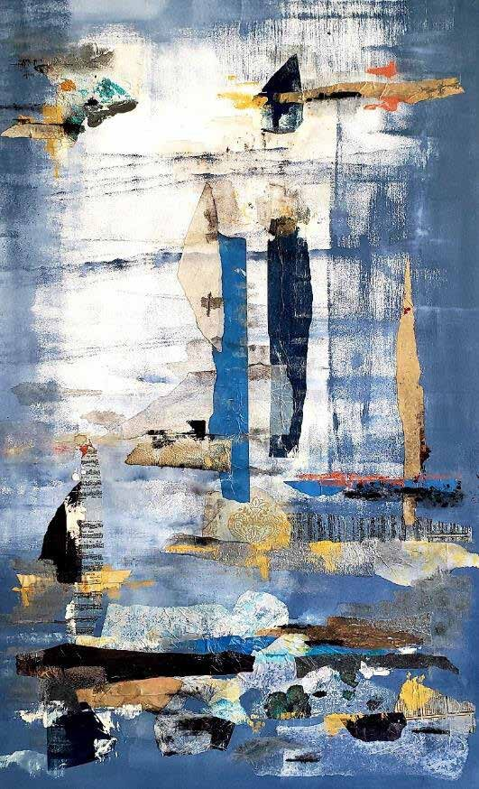
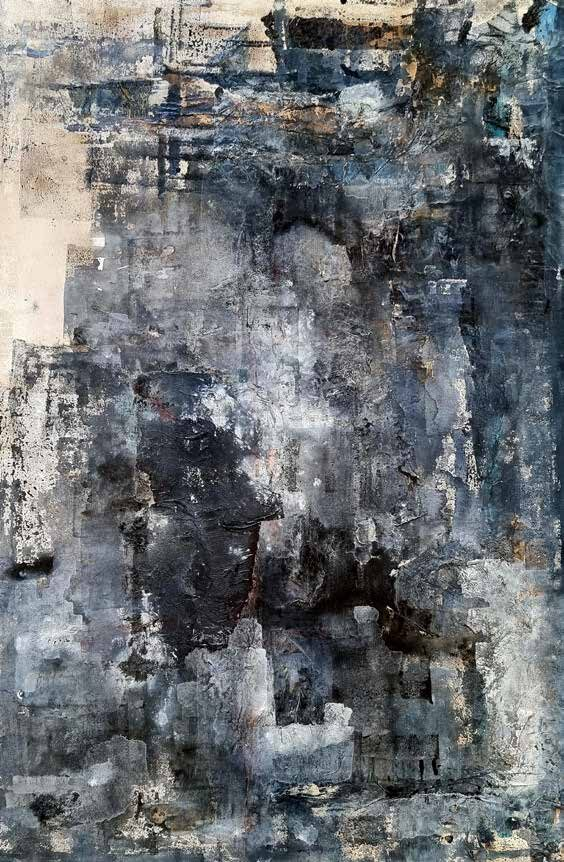
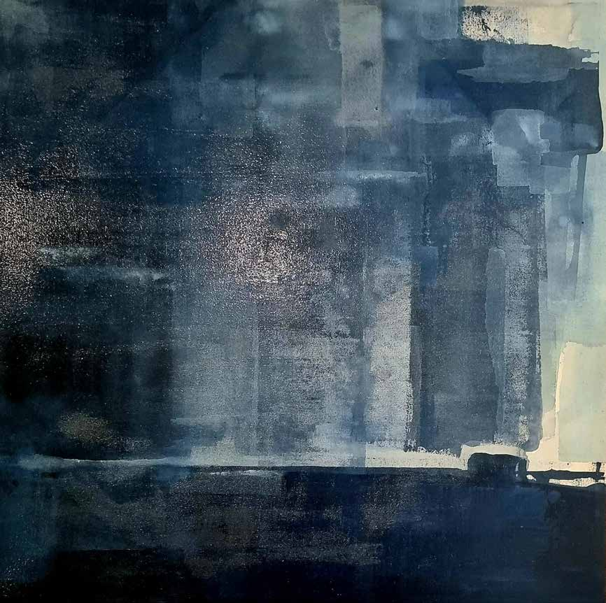
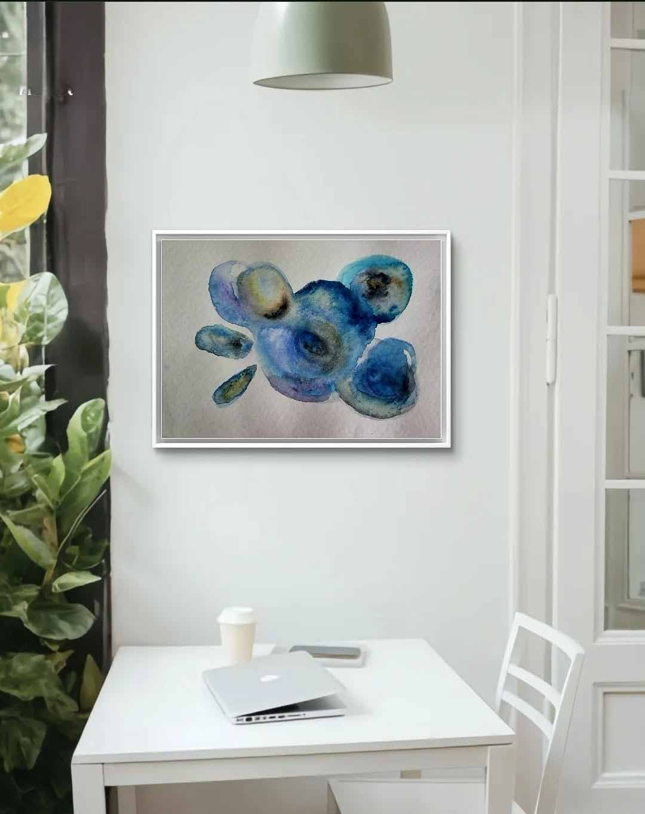

Proyecto · Blue Mind Life Style
Blue Mind Life Style es la obra en curso de Florencia: pintura, textil y objetos de interiorismo construidos alrededor de una sola convicción — que la cercanía al azul y al agua restaura, de forma medible, la calma, el foco y el bienestar. Cada colección a continuación aborda esa idea desde un sentido diferente.
Relax · Peace · Creativity · Cheerful · Freedom — el registro emocional de la obra, en acrílico y acuarela.
Piezas en lana y tejido — Okinawa, Barbagia, Loma Linda, Icaria, Nicoya — nombradas en honor a las Zonas Azules de longevidad del mundo.
Pacífico, Ártico, Índico, Atlántico, Antártico — grandes lienzos texturados nombrados en honor a los océanos que los inspiran.
Sunlight, Twilight, Midlight, Abyss, Freedom — las obras más profundas e introspectivas de la colección.




“En la obra de la artista Florencia Zampieri se ve una búsqueda infinita entre lo intenso y lo sutil. Reinterpretar todo lo que plasma en sus trabajos es entrar en un universo lleno de interrogantes y desafíos.”Vivian Guggenheim — Artista Visual, Madrid